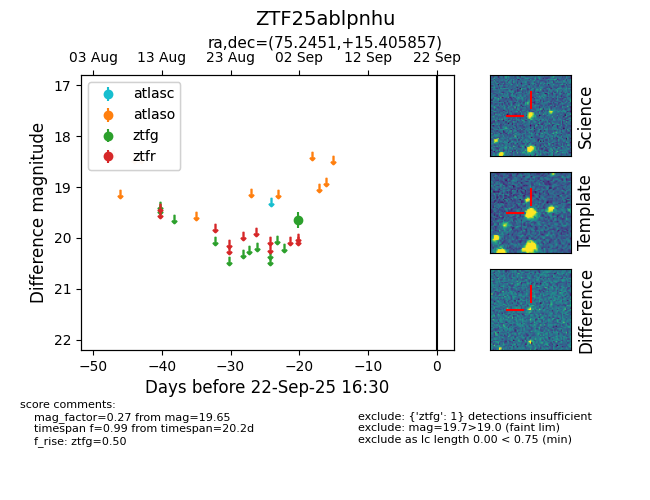

FINK: ZTF25ablpnhu
Lasair: ZTF25ablpnhu
ALeRCE: ZTF25ablpnhu
ZTF25ablpnhu (ztf,fink)
equatorial (ra, dec) = (75.2451,+15.40586)
galactic (l, b) = (185.6700,-16.05549)

last ztfg=19.65
1 ztfg detections